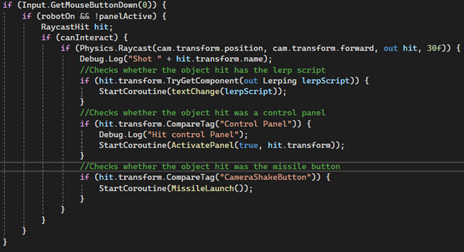
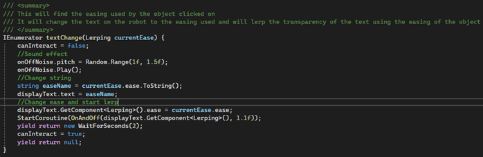

This project features objects under various methods of movement. The code makes use of a custom linear interpolation (lerp) easings library, alongside a custom math library.
For this project, I was tasked with developing a scene in Unity that would display numerous objects moving using different methods of movement. For this, I created a custom maths library alongside a custom easings library which I was able to reutilise for multiple future assessments. It also had functionality for calculating Bezier curves and Hermite splines and moving an object using these methods. There were also objects that were being moved using unity's physics engine. Additionally, I expanded the Lerp functionality to include a camera shake.
Not only did I have objects moving under these methods, but I also had to develop a system that would display the methods used when the object was interacted with. For my approach, I used a cute robot in the corner of the screen that you could turn on and off, if you clicked on a moving object while the robot was on, it would display the movement method that was being used.
I also added functionality for some of the objects to be altered during runtime, there were parameters on the object that you could change, such as: whether it moved, whether it rotated, whether it grew and shrunk in size, whether it changed colour, the duration of the movement and even the easing that the object was being moved with. These could be changed on a console in the middle of the main room.